Unity tools & shader developer. Physically based, fully procedural, GPU-driven assets — from infinite FFT oceans to refractive eyes and volumetric afterburners. No textures to ship, no compromises.
AAA URP water & infinite ocean. GPU FFT wave simulation (Tessendorf / JONSWAP spectrum), physically based GGX shading, Beer–Lambert absorption, boat wakes shaped by the real hull, buoyancy, caustics, waterfalls, seamless underwater — plus a built-in anime stylized mode.
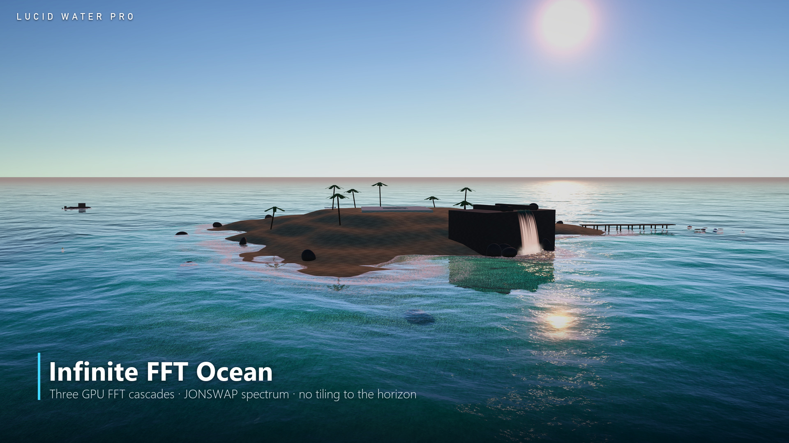
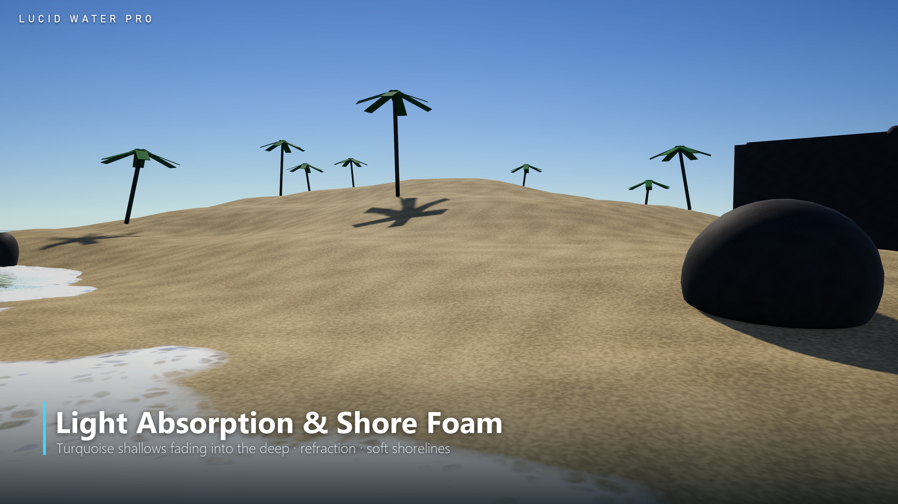
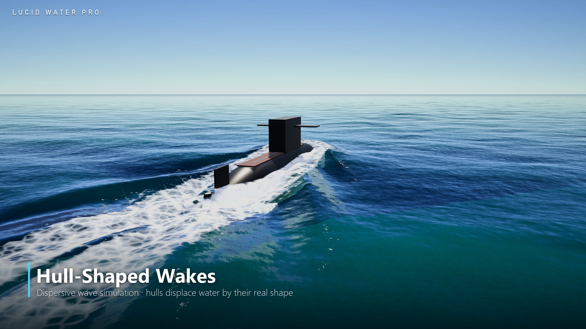
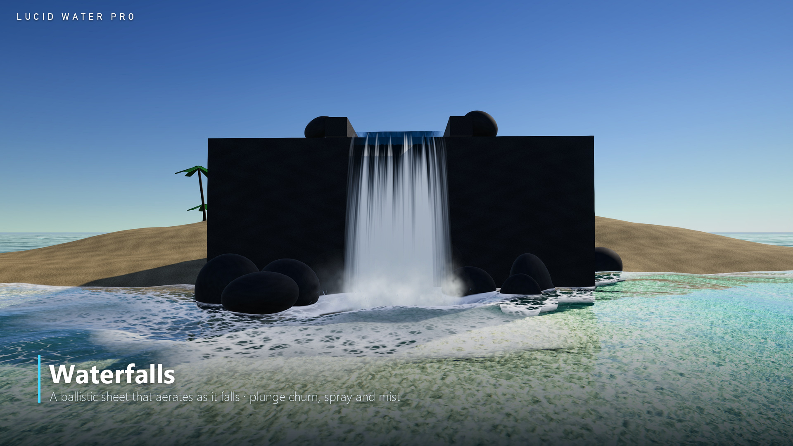
Real-time photoreal eye system. Snell's-law refractive cornea with true iris depth, fully procedural iris and sclera, vessel-grown veins with Beer–Lambert absorption, light-reactive pupil, eyelid occlusion baking — 16 presets, one draw call per eye.
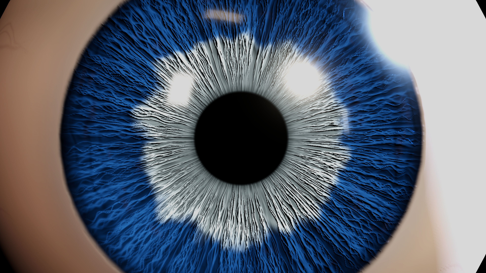
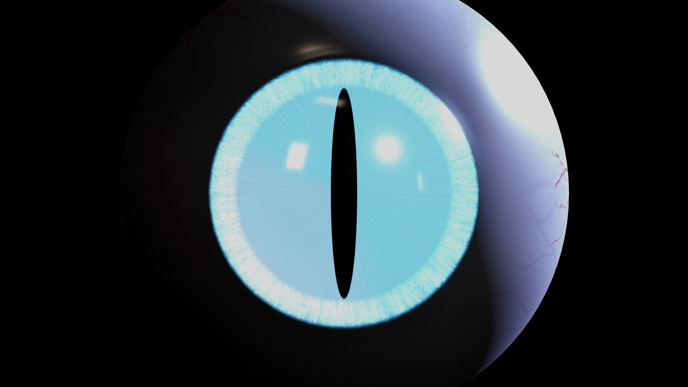
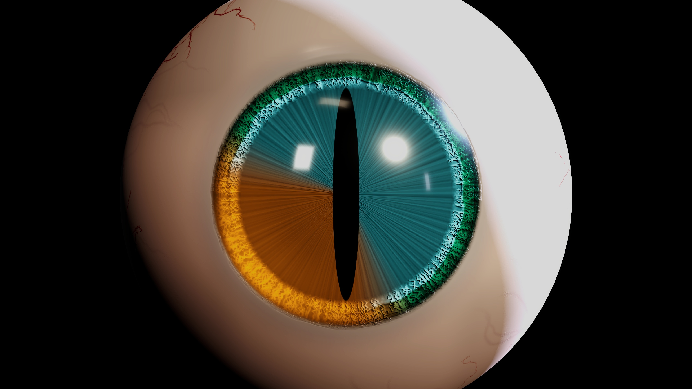
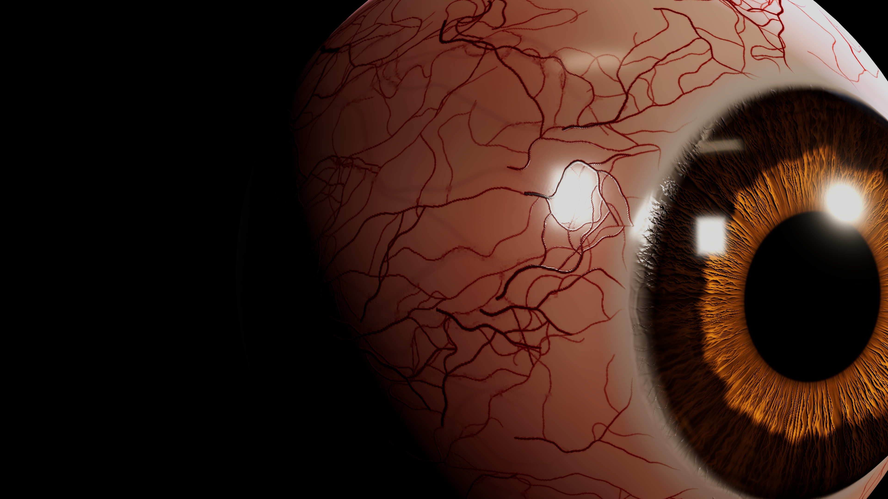
Physically based jet engines you control from one line of code. Ray-marched volumetric afterburner plume with black-body chromaticity, Mach diamonds, glowing engine interior with real parallax, depth-aware heat distortion, engine simulation with spool-up lag — and a dedicated mobile tier.
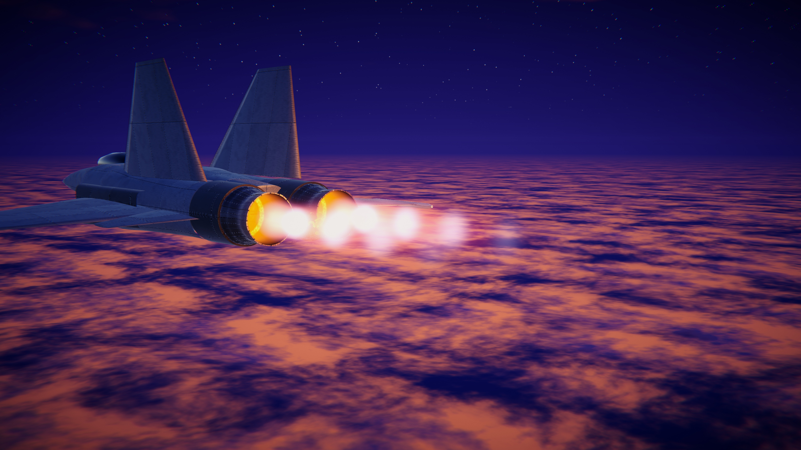
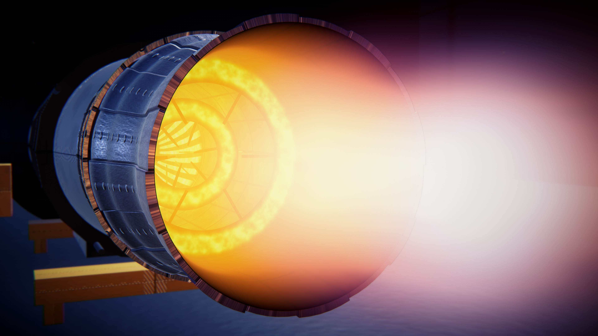
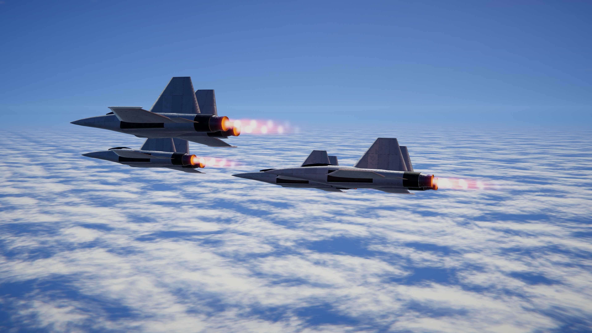
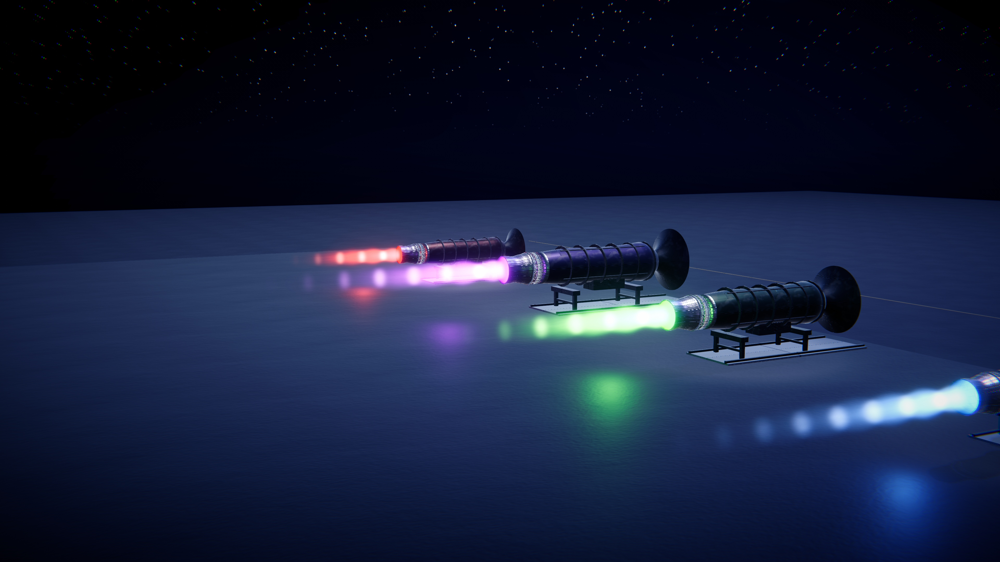